Créditos / Credits
Señales de tráfico
Todas las imágenes de señales proceden de Wikimedia Commons y están marcadas como dominio público (licencia verificada en cada archivo vía la API de Commons el 26/10/2026).
| Señal | Archivo | Autor | Licencia | |
|---|---|---|---|---|
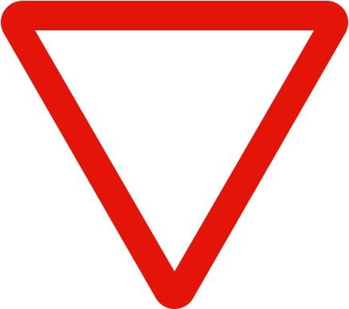 | R1 – Ceda el paso | File:Spain traffic signal r1.svg | Unknown authorUnknown author | Public domain |
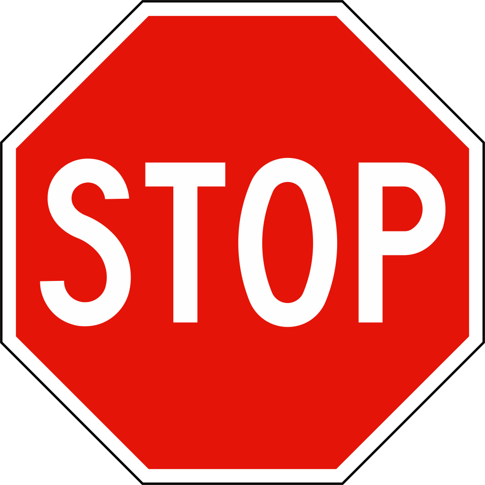 | R2 – Detención obligatoria (STOP) | File:Spain traffic signal r2, 2023 set.svg | Ministerio de Transportes, Movilidad y Agenda Urbana | Public domain |
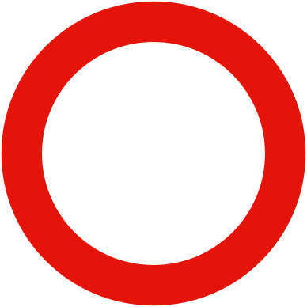 | R100 – Circulación prohibida | File:Spain traffic signal r100.svg | — | Public domain |
| R101 – Entrada prohibida | File:Spain traffic signal r101.svg | Benedicto16 | Public domain | |
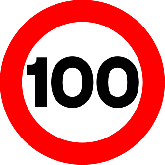 | R301 – Velocidad máxima (100) | File:Spain traffic signal r301-100.svg | Majafego | Public domain |
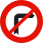 | R302 – Giro a la derecha prohibido | File:Spain traffic signal r302.svg | No machine-readable author provided. Benedicto16 assumed (based on copyright claims). | Public domain |
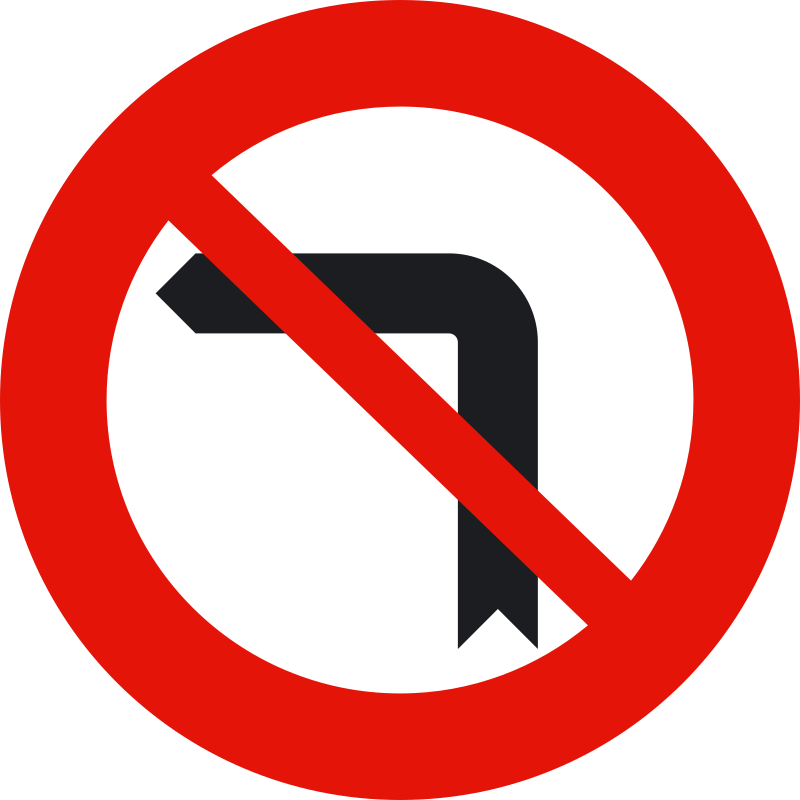 | R303 – Giro a la izquierda prohibido | File:Spain traffic signal r303.svg | No machine-readable author provided. Benedicto16 assumed (based on copyright claims). | Public domain |
| R305 – Adelantamiento prohibido | File:Spain traffic signal r305.svg | No machine-readable author provided. Benedicto16 assumed (based on copyright claims). | Public domain | |
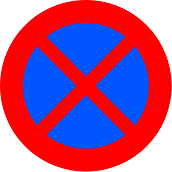 | R307 – Parada y estacionamiento prohibidos | File:Spain traffic signal r307.svg | The original uploader was Benedicto16 at Wikimedia Commons. | Public domain |
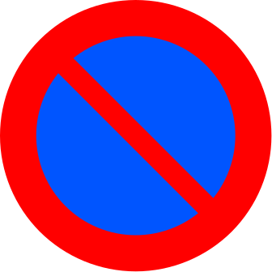 | R308 – Estacionamiento prohibido | File:Spain traffic signal r308.svg | Gigillo83 | Public domain |
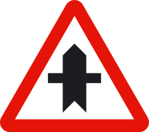 | P1 – Intersección con prioridad | File:Spain traffic sign p1.svg | — | Public domain |
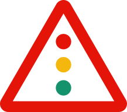 | P3 – Semáforos | File:Spain traffic signal p3.svg | Benedicto16 | Public domain |
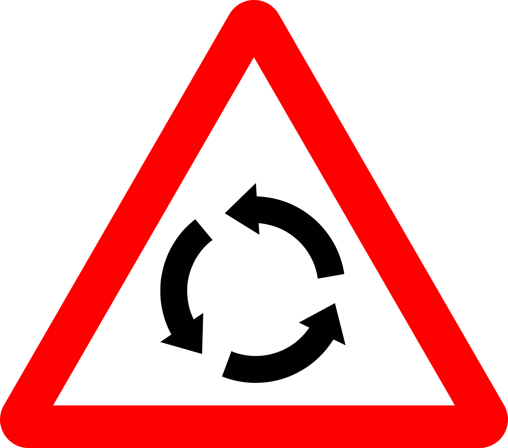 | P4 – Intersección con circulación giratoria | File:Spain traffic signal p4.svg | No machine-readable author provided. Benedicto16 assumed (based on copyright claims). | Public domain |
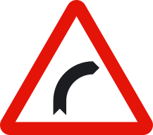 | P13A – Curva peligrosa hacia la derecha | File:Spain traffic signal p13a.svg | No machine-readable author provided. Benedicto16 assumed (based on copyright claims). | Public domain |
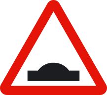 | P15A – Resalto | File:Spain traffic signal p15a.svg | No machine-readable author provided. Benedicto16 assumed (based on copyright claims). | Public domain |
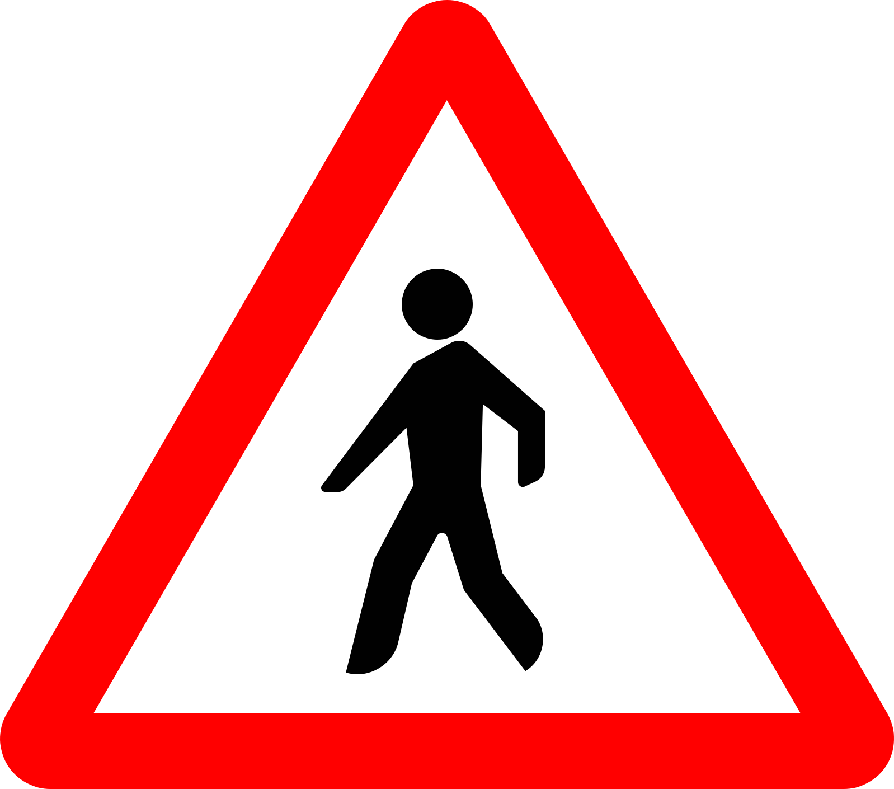 | P20 – Peatones | File:Spain traffic signal P-20a.svg | No machine-readable author provided. Benedicto16 assumed (based on copyright claims). | Public domain |
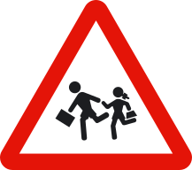 | P21 – Niños | File:Spain traffic signal p21.svg | No machine-readable author provided. Benedicto16 assumed (based on copyright claims). | Public domain |
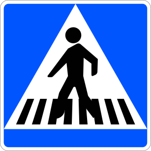 | S13 – Situación de un paso para peatones | File:Spain traffic signal s13.svg | No machine-readable author provided. Benedicto16 assumed (based on copyright claims). | Public domain |
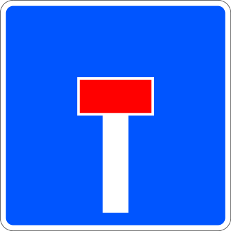 | S15A – Calzada sin salida | File:Spain traffic signal s15a.svg | No machine-readable author provided. Benedicto16 assumed (based on copyright claims). | Public domain |
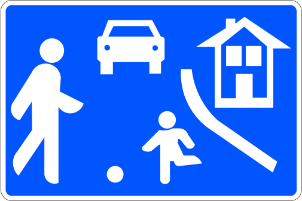 | S28 – Calle residencial | File:Spain traffic signal s28.svg | No machine-readable author provided. Benedicto16 assumed (based on copyright claims). | Public domain |


Preguntas
Preguntas originales redactadas a partir del Reglamento General de Circulación (Real Decreto 1428/2003) y el manual público del conductor. Cada pregunta cita su artículo. No proceden de ningún banco de preguntas y no son preguntas oficiales.